Modelo Entidad Relación Modelo Relacional RA6
Diseño Lógico: Transformación del modelo ER a MR
Propuesta didáctica
En esta UT vamos a terminar de trabajar el RA6: Diseña modelos relacionales normalizados interpretando diagramas entidad/relación.
Criterios de evaluación
- CE6a: Se han utilizado herramientas gráficas para representar el diseño lógico.
- CE6b: Se han identificado las tablas del diseño lógico.
- CE6c: Se han identificado los campos que forman parte de las tablas del diseño lógico.
- CE6d: Se han analizado las relaciones entre las tablas del diseño lógico.
- CE6e: Se han identificado los campos clave.
- CE6f: Se han aplicado reglas de integridad.
- CE6h: Se han analizado y documentado las restricciones que no pueden plasmarse en el diseño lógico.
Contenidos
Interpretación de Diagramas Entidad/Relación:
− Paso del diagrama E/R al modelo relacional.
Cuestionario inicial
- ¿Cómo se transforma un atributo compuesto al modelo relacional?
- ¿Y un atributo multivaluado?
- ¿Qué diferencia hay en la transformación de una relación 1:N respecto a una relación 1:1?
- ¿Qué tipo de relación provoca la creación de una nueva tabla?
- Cuando hablamos de generalizaciones, ¿qué tres opciones podemos plantear al transformarlas al modelo relacional?
- ¿Qué diferencia una entidad débil respecto a una fuerte en el modelo relacional?
- ¿Podemos tener una entidad débil sin clave primaria?
- Cuando una clave ajena además es clave alternativa, ¿que tipo de relación existe entre las entidades?
- ¿Y si la clave ajena además está marcada como valor no nulo?
- Cuando tenemos una clave ajena que toda ella es una clave primaria, ¿que tipo de relación existe entre las entidades?
Programación de Aula (15h)
Esta unidad es la cuarta, con lo que se imparte en la primera evaluación, durante el mes de noviembre, con una duración estimada de 14 sesiones lectivas:
| Sesión | Contenidos | Actividades | Criterios trabajados |
|---|---|---|---|
| 1 | Paso de E/R al MR | ||
| 2 | Relaciones 1:N y 1:1 | AC401, AC402 | CE6b-CE6f, CE6h |
| 3 | Relaciones N:M | AC403 | CE6b-CE6f, CE6h |
| 4 | Restricciones | AC406 | CE6b-CE6f, CE6h |
| 5 | Generalización | AC408 | CE6b-CE6f, CE6h |
| 6 | Práctica "Cocina" | PR409 | CE6a-CE6g, CE6h |
| 7 | De MR a EER I | ||
| 8 | De MR a EER II | AC410, AC411 | CE6d |
| 9 | Práctica "Gimnasio" | AC412 | CE6d |
| 10 | Interpretando MR | AC416 | CE6a-CE6f |
| 11 | Práctica "Ticket de compra" | PR418 | RA6 |
| 12 | Prueba objetiva | PO419 | RA6 |
| 13 | Prueba objetiva | ||
| 14 | Reto - diseño lógico | PY417 | RA6 |
| 15 | Reto - exposiciones |
Al finalizar esta unidad, realizaremos una prueba objetiva consistente en modelar supuestos sencillos y posteriormente transformarlos a modelo relacional, así como interpretar modelos ya existentes.
Pasos
Una vez conocido el modelo conceptual entidad-relación y el modelo lógico relacional, vamos a estudiar como transformar y pasar de uno a otro. Para ello, seguiremos los siguientes pasos:
- Las entidades pasan a ser tablas
- Los atributos pasar a ser columnas
- Los atributos identificadores pasar a ser claves primarias.
- Los atributos de las relaciones pasan a columnas detrás de las claves ajenas
- Las relaciones, dependiendo de la cardinalidad, pasarán a ser claves ajenas y/o tablas.
Atributos
Conviene recordar que dentro de una tabla, no se puede repetir el nombre de ningún atributo, pero sí en tablas diferentes.
Algunos profesionales prefieren que no se repitan los identificadores entre diferentes tablas de una misma BD, aunque es cierto que las herramientas ORM de generación de modelos físicos a partir de definición de clases u objetos suelen nombrar todas las claves primarias como id o _id.
En cuanto a los atributos compuestos, se separan como atributos individuales dentro de la tabla, pudiéndoles poner el prefijo del atributo compuesto o el propio nombre del atributo si no da pie a confusión.
Para los atributos derivados, dependiendo del caso, bien no se añaden como atributo (ya que se obtendrán a partir de los datos de las relaciones), o bien se renombra el atributo para almacenar el dato en crudo sobre el cual se realiza el cálculo necesario.
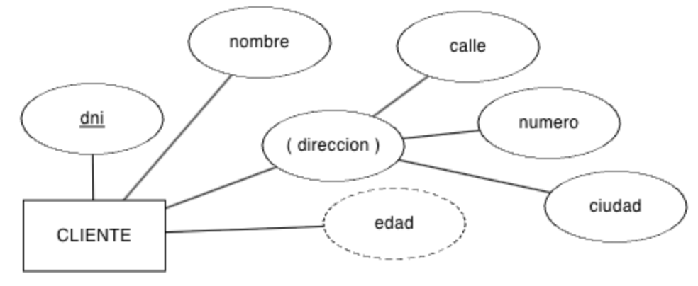
Transformación de atributos
Por ejemplo, si partimos de un sencillo modelo ER de un cliente, su transformación al modelo relacional sería la siguiente:
CLIENTE (dni, nombre, calle, numPiso, ciudad, fnac)
· PK: (dni)
Destacar que no hemos puesto el nombre del atributo compuesto, sino cada uno de sus atributos, y además, hemos renombrado numero a numPiso para evitar confusiones con otras entidades; respecto al atributo derivado edad, lo hemos cambiado por la fecha de nacimiento (fnac).
Respecto a los atributos multivaluados, derivan en una relación uno a muchos (1:N), tal como veremos a continuación.
Claves compuestas
Normalmente, cada entidad tendrá un atributo identificador que traduciremos en una clave primaria. Pero puede darse el caso que una entidad tenga una clave compuesta, o tenga marcados dos atributos identificadores (en este caso, uno será la clave primaria y el otro será una clave alternativa que marcaremos como única).
Por ejemplo, el siguiente diagrama representa un aula que se identifica mediante una clave compuesta:
AULA (edificio, numSala, numAsientos)
· PK: (edificio, numSala)
Sin embargo, también podemos tener un empleado con dos atributos identificadores:
EMPLEADO (codigo, nif, nombre, salario)
· PK: (codigo)
· UK: (nif)

Clave primaria compuesta vs claves candidatas
Relaciones
Al transformar las relaciones, dependiendo de la cardinalidad deberemos colocar la clave ajena en un lugar u otro.
1:N
La clave primaria de la entidad con cardinalidad máxima a 1 se incluye en la entidad con cardinalidad máxima N como clave ajena.
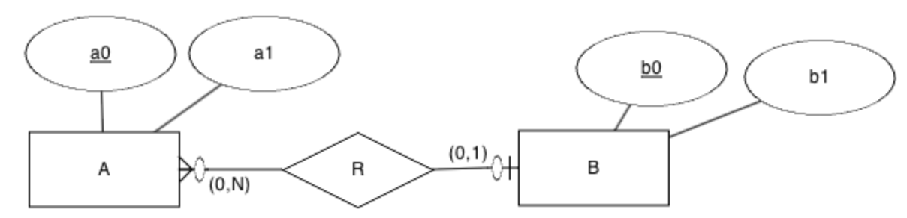
Transformación de relación 1:N
A (a0, a1, b0*)
· PK: (a0)
· FK: (b0) → B
B (b0, b1)
· PK: (b0)
De esta manera, tenemos que dado un registro en A, tendremos uno en B. Y dado un B, podemos tener muchos en A, cumpliendo la cardinalidad de uno a muchos.
Por ejemplo, si tenemos un modelo donde, en vez de un atributo multivaluado, hemos creado una entidad para modelar que una persona puede tener muchos teléfonos:
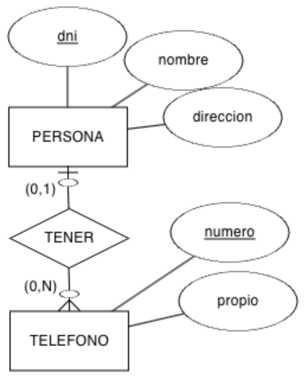
Ejemplo de relación 1:N
Si aplicamos la transformación recién vista, obtenemos el siguiente esquema lógico:
PERSONA (dni, nombre, direccion)
· PK: (dni)
TELEFONO (numero, propio, dni*)
· PK: (numero)
· FK: (dni) → PERSONA
Conviene recordar que la clave ajena será la clave primaria que nos hemos traido desde la entidad con cardinalidad máxima a 1 (en este caso, llevamos la clave primaria de PERSONA a TELEFONO), de manera que el atributo TELEFONO.dni representa la relación TENER.
Las claves ajenas se colocan tras los atributos de cada tabla (en este caso, detrás de numero y propio), y normalmente, se nombran con el mismo nombre de la clave primaria. Si diera pie a confusión, es recomendable renombrarla pudiendo como sufijo el nombre de la tabla.
Finalmente, si quisiéramos generar el diagrama relacional, obtendríamos una gráfico similar al siguiente, donde se puede ver como desde TELEFONO.dni se conecta con PERSONA.dni:

Esquema relacional en ERDPlus
Recordad la regla de integridad referencial del modelo relacional, donde cada valor de la clave ajena debe coincidir con un valor existente de la clave primaria a la que referencia (o ser nulo). De esta manera, no podemos tener un dni en la tabla TELEFONO que no exista previamente en la tabla PERSONA.
PERSONA
| dni | nombre | direccion |
|---|---|---|
| 11111111A | Pedro Casas | Calle Mayor, 1 |
| 22222222B | Laura García | Avda Libertad, 33 |
| 33333333C | Mireia Vidal | Paseo de la Estación, 5 |
- TELEFONO |
| numero | propio | dni* |
|---|---|---|
| 636111111 | true | 22222222B |
| 686222222 | true | 11111111A |
| 666333333 | false | 11111111A |
| 666444444 | true |
Renombrando claves ajenas
Aunque es muy común que el nombre del atributo que hace de clave ajena coincida con la clave primaria a la que apunta, podemos renombrarla y ponerle un nombre que facilite su comprensión.
En el caso de la tabla TELEFONO, el campo dni hace referencia al titular del teléfono, no es que un teléfono tenga un dni. Podríamos haber modelado la tabla renombrando el TELEFONO.dni como TELEFONO.propietario dando un valor semántico al atributo:
TELEFONO (numero, propio, propietario*)
· PK: (numero)
· FK: (propietario) → PERSONA
Lo que sí es obligatorio es que los dominios de las claves ajenas y las claves primarias coincidan.
Atributos multivaluados
Cuando tenemos un atributo multivaluado, éste se mapea en una relación separada.
Podemos crear una nueva tabla con un código o atributo identificador para cada registro y añadir una clave ajena a modo de relación 1:N.

Atributo multivaluado
Así pues, si tenemos un empleado que tiene muchos teléfonos mediante un atributo, generaremos dos tablas:
EMPLEADO (nif, nombre)
· PK: (nif)
TELEFONO (numero, dni*)
· PK: (numero)
· FK: (dni) → EMPLEADO
Si fuera un valor que pudiese compartirse entre varios empleados, como pudiera ser que un empleado tiene muchos cargos, y ese mismo cargo lo pueden tener varios empleados (pero no nos interesa a priori modelarlo conceptualmente como una entidad), podríamos crear una clave primaria compuesta:
CARGO (cargo, dni*)
· PK: (cargo, dni)
· FK: (dni) → EMPLEADO
1:1
En este caso, la clave ajena se pone en cualquier entidad y se añade como clave alternativa/única (UK).

Transformación de relación 1:1
Así pues, una posible solución sería llevar la clave ajena a A:
A (a0, a1, b0*)
· PK: (a0)
· FK: (b0) → B
· UK: (b0)
B (b0, b1)
· PK: (b0)
Al hacer que el atributo que es clave ajena sea clave única, restringimos que dicho valor no se pueda repetir.
Y la otra posible solución sería llevar la clave ajena a B:
A (a0, a1)
· PK: (a0)
B (b0, b1, a0*)
· PK: (b0)
· FK: (a0) → A
· UK: (a0)

Ejemplo de relación 1:1
Vamos a poner otro ejemplo. En este caso, tenemos la relación existente entre un vehículo y el empleado que lo conduce en una empresa, dando lugar a una relación 1:1 (fíjate como en este caso, hemos renombrado la clave ajena a dniEmpleado para facilitar la compresión):
EMPLEADO (dni, nombre, dirección)
· PK: (dni)
VEHICULO (matrícula, marca, modelo, dniEmpleado*)
· PK: (matrícula)
· FK: (dniEmpleado) → EMPLEADO
· UK: (dniEmpleado)
¿Sabrías...?
¿Sabrías crear otra solución donde la clave ajena estuviera en la entidad EMPLEADO?
A continuación, rellena las dos tablas con datos y comprueba si la relación entre ambas entidades es 1:N o 1:1.
N:M
En el caso de las relaciones muchos a muchos, la relación se traduce en una nueva tabla, cuya clave primaria se compone de las claves primarias referenciadas, y cada clave primaria es una clave ajena.
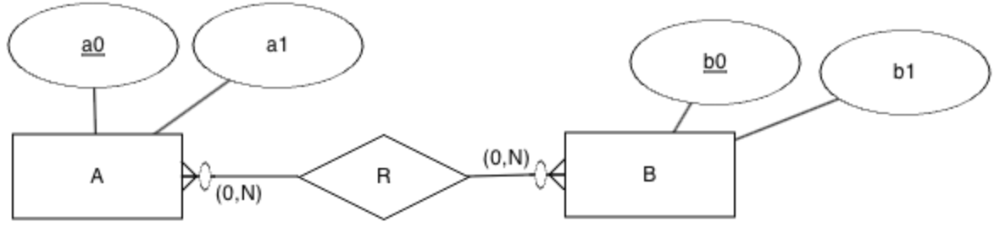
Transformación de relación N:M
A (a0, a1)
· PK: (a0)
B (b0, b1)
· PK: (b0)
R (a0*, b0*)
· PK: (a0, b0)
· FK: (a0) → A
· FK: (b0) → B
Para este ejemplo, tenemos una empresa de transportes, donde un conductor conduce varios autobuses, y luego un autobus lo conducen varios conductores en diferentes trayectos, dando lugar a una relación muchos a muchos, donde en la relación añadimos el atributo trayecto:

Ejemplo de relación N:M
CONDUCTOR (dni, nombre, experiencia)
· PK: (dni)
AUTOBUS (matricula, categoria)
· PK: (matricula)
CONDUCIR (dni*, matricula*, trayecto)
· PK: (dni, matricula)
· FK: (dni) → CONDUCTOR
· FK: (matricula) → AUTOBUS
El orden importa
Cuando pasamos una relación uno a muchos o muchos a muchos de un modelo ER a un modelo relacional, primero crearemos las tablas que no tienen claves ajenas.
En este caso, empezaremos por CONDUCTOR y AUTOBUS, definiendo sus claves primarias y atributos.
A continuación, crearemos la/s tabla/s que contiene claves ajenas a las tablas ya creadas, esto es, la tabla CONDUCIR que apunta a CONDUCTOR y AUTOBUS.
En este caso, el diagrama del modelo relacional se traduce en tres tablas conectadas, colocando el atributo de la relación en la nueva tabla CONDUCIR. Destacar como la tabla tiene una clave primaria compuesta, donde de cada parte de la clave sale una clave ajena a cada una de las tablas que relaciona:

Esquema relacional en ERDPlus
Y comprobamos con datos cómo sí se cumplen las cardinalidades:
AUTOBUS
| matricula | categoria |
|---|---|
| 1111ABC | normal |
| 2222BCD | larga distancia |
| 3333DEF | larga distancia |
- CONDUCTOR |
| nif | nombre | experiencia |
|---|---|---|
| 11111111A | Andrés Checa | 1 |
| 22222222B | José Escrig | 2 |
| 33333333B | Marina Fernández | 3 |
- CONDUCIR |
nif* |
matricula* |
trayecto |
|---|---|---|
| 11111111A | 1111ABC | A |
| 22222222B | 1111ABC | B |
| 11111111A | 3333DEF | C |
N:M con dimensión temporal
Si la relación tiene atributos de tipo fecha, será necesario incluir al menos uno en la clave primaria.
Supongamos una empresa de alquiler de vehículos, donde tenemos que un cliente puede alquilar el mismo vehículo en fechas diferentes, o alquilar diferentes vehículos. Claramente, un vehículo lo pueden alquilar diferentes clientes en fechas diferentes. Para ello, creamos una relación muchos a muchos, colocando la fecha de inicio y de finalización del alquiler en la propia relación.
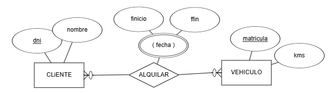
Relación N:M con dimensión temporal
Al crear el modelo relacional, tendremos las dos tablas de las entidades relacionadas:
CLIENTE (dni, nombre)
· PK: (dni)
VEHICULO (matricula, kms)
· PK: (matricula)
Y la tabla que las relaciona con el atributo de fecha de inicio como parte de la clave primaria (de este modo, el cliente A puede alquilar el vehículo X en días diferentes):
ALQUILAR (dni*, matricula*, finicio, ffin)
· PK: (dni, matricula, finicio)
· FK: (dni) → CLIENTE
· FK: (matricula) → VEHICULO
Reflexivas
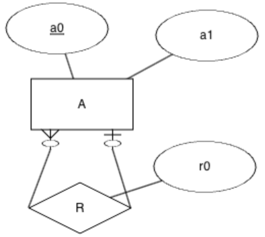
Relación reflexiva 1:N
Recuerda que consideramos una relación reflexiva cuando una entidad se relaciona consigo misma.
Dependiendo de la cardinalidad de la relación, si tenemos una cardinalidad 1:1 o 1:N, la clave ajena apuntará a la misma tabla, y por lo tanto tendremos que añadir un nuevo atributo (más los propios de la relación) a la tabla y si tenemos una relación N:M, las dos claves ajenas apuntarán a la misma entidad.
Así pues, con el siguiente modelo 1:N tendríamos una entidad con sus atributos propios (a0 y a1), al cual le añadimos la clave ajena (a0r) y los atributos de la relación (en este caso, r0):
A (a0, a1, a0r*, r0)
· PK: (a0)
· FK: (a0r) → A
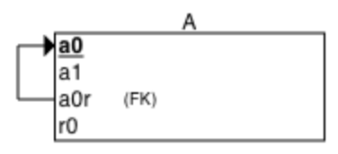
Relación reflexiva 1:N en MR
A nivel de tabla, tendríamos que unos posibles datos serían los siguientes, donde los valores de a0r deben ser algunos de los existentes previamente en a0:
| a0 | a1 | a0r* |
r0 |
|---|---|---|---|
| 1 | alfa | ||
| 2 | beta | 1 | azul |
| 3 | gamma | 2 | amarillo |
| 4 | delta | 1 | verde |
Claves ajenas compuestas
¿Y si nuestra entidad tiene una clave primaria compuesta? En este caso, la clave ajena también deberá compuesta.

Ejemplo de reflexiva 1:N
Supongamos el siguiente diagrama donde tenemos que un producto puede ser el sustituto de uno o más productos de un almacén. Además, cada producto se identifica mediante un atributo compuesto que dará lugar a una clave primaria compuesta.
Así pues, el modelo relacional sería:
PRODUCTO (dpto, numero, nombre, pvp, dptoS*, numeroS*, fecha)
· PK: (dpto, numero)
· FK: (dptoS, numeroS) → PRODUCTO
Donde la clave ajena también es compuesta.
¿Serías capaz de dibujar el diagrama del modelo relacional?
Restricciones
Una vez visto como se transforman los atributos y las relaciones, vamos a ver algunas particularidades a la hora de aplicar restricciones sobre las cardinalidades.
Cardinalidad mínima 1
Cuando la cardinalidad mínima es 1, independientemente de la cardinalidad máxima, estamos indicando que sí o sí dicha clave ajena debe tener un valor. Para cumplirla, únicamente debemos marcar la clave ajena como valor no nulo (VNN).

Cardinalidad mínima a 1
A (a0, a1, b0*)
· PK: (a0)
· FK: (b0) → B
· VNN: (b0)
B (b0, b1)
· PK: (b0)
De esta manera, toda ocurrencia de A debe tener una de B.
Cardinalidad mínima en N

Cardinalidad mínima a 1 en N
Supongamos la misma relación que el caso que acabamos de ver, pero ahora ambos lados tienen la cardinalidad mínima a 1. El modelo relacional será el mismo:
A (a0, a1, b0*)
· PK: (a0)
· FK: (b0) → B
· VNN: (b0)
B (b0, b1)
· PK: (b0)
Si la cardinalidad mínima está en el lado de N, se produce una pérdida expresiva, porque a nivel de base de datos no podemos obligar que para cada registro de B haya como mínimo uno de A.
Vamos a comprobar con datos de ejemplo la pérdida expresiva. Si en la tablas tenemos los siguientes datos:
A
| a0 | a1 | bo* |
|---|---|---|
| 1 | alfa | x |
| 2 | beta | x |
| 3 | gamma | y |
- B |
| b0 | b1 |
|---|---|
| x | rojo |
| y | azul |
| z | amarillo |
No podemos asegurar que todo valor de B aparezca en A, ya que el valor z de B no aparece para ninguna clave ajena en A.
Identificación
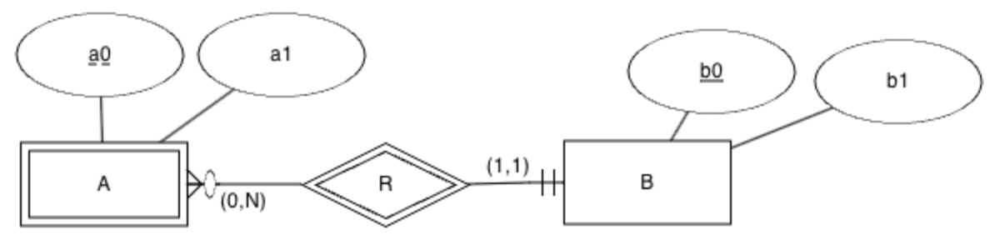
Restricción de ID
En las restricciones de identificación, la entidad débil se identifica, completamente o en parte, con la entidad fuerte. Es decir, parte de la clave primaria de la entidad débil son los atributos clave de la entidad fuerte. Es por ello, que la clave ajena debe formar parte de la clave primaria, la cual se define como una clave compuesta por la combinación de la clave primaria de la entidad fuerte y la débil:
A (a0, b0*, a1)
· PK: (a0, bo)
· FK: (b0) → B
B (b0, b1)
· PK: (b0)
Los atributos clave de la entidad débil que no apuntan a la entidad fuerte se conocen como clave parcial. En el ejemplo anterior, a0 sería la clave parcial de la entidad débil A.

Ejemplo de restricción de ID
En el siguiente ejemplo, tenemos que cada sala se identifica por el cine al que pertenece por un número de sala, el cual se reinicia por cada cine. Es decir, la sala 1 del cine IMF no es la misma tupla que la sala 1 del cine ABC:
CINE (codigo, nombre, direccion)
· PK: (codigo)
SALA (numero, codCine*, aforo)
· PK: (numero, codCine)
· FK: (codCine) → CINE
Las tablas de datos de ejemplo demuestran que aunque la entidad débil repita número, la clave de la entidad fuerte deshace la ambigüedad:
CINE
| codigo | nombre | direccion |
|---|---|---|
| 1 | ABC | Badajoz |
| 2 | IMF | Ondara |
| 3 | Odeón | Badajoz |
- SALA |
| numero | codCine* |
aforo |
|---|---|---|
| 1 | 1 | 50 |
| 1 | 2 | 60 |
| 1 | 3 | 70 |
| 2 | 1 | 55 |
Ejemplo resuelto ID
Supongamos el diagrama ER que vimos en la unidad 2 al tratar las restricciones de ID. Vamos a obtener el modelo MR del mismo, teniendo en cuenta que la entidad LINEA_PEDIDO es una entidad débil respecto a la relación CONTENER, pero hace de entidad fuerte respecto a la relación TENER:
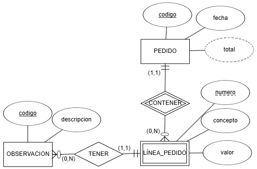
Restricción de ID
PEDIDO (codigo, fecha)
· PK: (codigo)
LINEA_PEDIDO (numero, codigo*, concepto, valor)
· PK: (numero, codigo)
· FK: (codigo) → PEDIDO
OBSERVACION (codigo, descripcion, numPedido*, codPedido*)
· PK: (codigo)
· FK: (numPedido, codPedido) → LINEA_PEDIDO
· VNN: (numPedido, codPedido)
¿Qué ha pasado con el atributo PEDIDO.total? 1
Generalización
Cuando tenemos una relación de tipo generalización, crearemos una tabla para el padre y otra para cada hijo. Este planteamiento se conoce como explicitar las entidades.
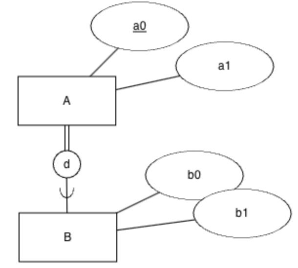
Generalización
Para ello, las subclases, las entidades hijo, tienen como clave principal y ajena la clave de la superclase, el padre. De esta manera, los hijos tienen como clave primaria la misma que el padre.
A (a0, a1)
· PK: (a0)
B (a0*, b0, b1)
· PK: (a0)
· FK: (a0) → A
Independientemente de si la generalización es disjunta o solapada, o total o parcial, el modelo relacional se realiza igual, perdiendo la semántica del modelo conceptual.

Ejemplo de Generalización de Persona
Por ejemplo, supongamos el siguiente modelo que representa la especialización de una persona en estudiante o trabajador:
Si explicitamos las tablas obtendremos:
PERSONA (dni, nombre, dirección, telefono)
· PK: (dni)
ESTUDIANTE (dni*, nivelEst, lugarEst, horasCur)
· PK: (dni)
· FK: (dni) → PERSONA
TRABAJADOR (dni*, numSegSocial, salario)
· PK: (dni)
· FK: (dni) → PERSONA
Alternativas
Otros planteamientos diferentes a explicitar consisten en:
- Colapsar: consiste en crea un única tabla con los datos de la superclase y las subclases. Es válido cuando las subclases se diferencian en muy pocos atributos. Como desventaja, las relaciones que los asocian al resto de las entidades son las mismas para las subclases, sin poder diferenciarlas. Así pues, es un solución más rápida, pero aporta peor semántica al modelo.
- Dividir: si existen muchos atributos distintos entre las subclases y los accesos a los datos de las subclases también afectan a los atributos comunes, es mejor dividir los datos y crear una tabla por cada subclase, pero no para el padre. Este planteamiento es más eficiente en consultas sobre los hijos, pero aporta más redundancia de datos y peor semántica.
Si retomamos el mismo ejemplo con estos planteamientos tendríamos:
- Colapsar: Una única tabla, creando un atributo tipo para indicar si es
estudianteotrabajador:
PERSONA (dni, nombre, dirección, telefono, tipo, nivelEst, lugarEst, horasCur, numSegSocial, salario)
· PK: (dni)
- Dividir: Una tabla por cada subclase:
ESTUDIANTE (dni, nombre, dirección, telefono, nivelEst, lugarEst, horasCur)
· PK: (dni)
TRABAJADOR (dni, nombre, dirección, telefono, numSegSocial, salario)
· PK: (dni)
Agregación
Una agregación no es más que una relación muchos a muchos, sobre la cual se relacionan otras tablas.
Vamos a pasar al modelo relacional el ejemplo que hicimos en la unidad de modelo conceptual, sobre las incidencias que se registran en un centro educativo.
El modelo ER es el siguiente, donde la entidad SESION es una agregación entre DOCENTE y AULA. La agregación que conceptualmente es una relación N:M se traduce en dos relaciones uno a muchos:
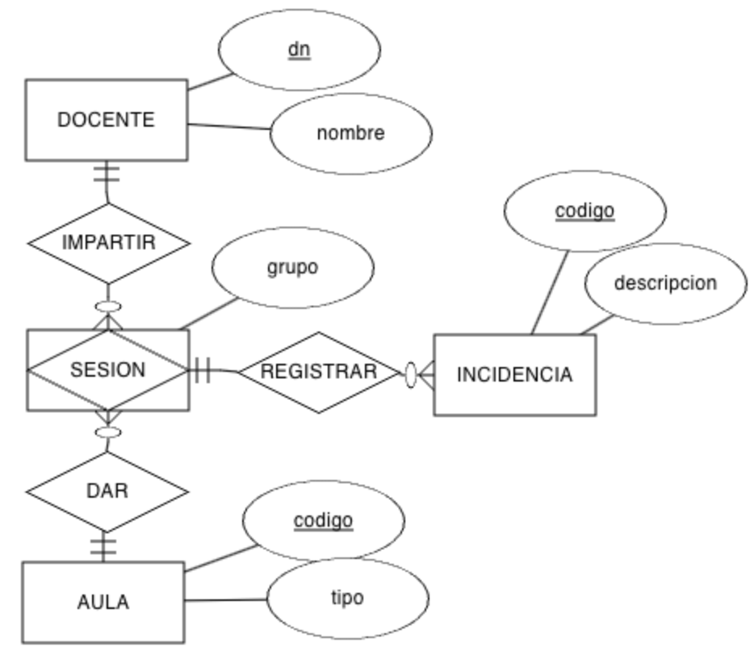
Agregación
Así pues, el modelo relacional sería:
DOCENTE (dni, nombre)
· PK: (dni)
AULA (codigo, tipo)
· PK: (codigo)
Si nos fijamos, la agregación tiene el mismo esquema que una relación muchos a muchos:
SESION (dni*, codigo*, grupo)
· PK: (dni, codigo)
· FK: (dni) → DOCENTE
· FK: (codigo) → AULA
Y al relacionar INCIDENCIA con SESION, como la clave primaria de SESION es compuesta, también lo será la clave ajena de la relación uno a muchos:
INCIDENCIA (codigo*, descripcion, dniSesion*, codigoSesion*)
· PK: (codigo)
· FK: (dniSesion, codigoSesion) → SESION
Relaciones N-arias
Cuando tengamos relaciones de grado 3 o mayor, se transforman de forma similar a las relaciones muchos a muchos.
Para ello, se crea una nueva tabla con la unión de las claves primarias de las entidades relacionadas, y crearemos tantas claves ajenas como entidades relacionadas.
Si una de las entidades tiene cardinalidad máxima 1, se queda fuera de la clave primaria.
De MR a ER
En ocasiones tendremos un modelo relacional y necesitaremos dibujar el modelo conceptual para entender bien los datos. En otras, el volver hacia atrás nos permitirá comprobar si el modelo obtenido es el resultado esperado.
Para ello, sabiendo las relaciones entre las claves primarias y las claves ajenas, las claves únicas y las restricciones de valor no nulo, podemos dibujar el modelo ER a partir del esquema lógico.
Algunas reglas que ya debes conocer son:
-
Si un atributo es clave ajena y no es clave primaria:
-
Si es clave única, la relación es 1:1
- Si no, la relación es 1:N
- Si el atributo también es valor no nulo (VNN), entonces la cardinalidad mínima es 1.
-
Si un atributo es clave ajena y es clave primaria:
-
Si toda la clave primaria es clave ajena, es un hijo
- Si la clave ajena es un subconjunto incompleto de la clave primaria, es una restricción de ID
- Si la clave ajena es un subconjunto completo de la clave primaria, es una relación N:M
Cardinalidades
Un primer enfoque consiste en recuperar las cardinalidades de las relaciones a partir de un modelo relacional. De esta manera, será más fácil dibujar el modelo entidad relación.
Vamos a partir de un modelo inicial sobre el cual vamos a ir iterando, el cual relaciona a un alumno con las asignaturas en las que se matricula:
ASIGNATURA (id, nombre, horas)
· PK: (id)
ALUMNO (dni, nombre)
· PK: (dni)
MATRICULAR (id*, dni*, fecha)
· PK: (id, dni)
· FK: (id) → ASIGNATURA
· FK: (dni) → ALUMNO
Revisando las relaciones, la tabla MATRICULAR tiene dos claves ajenas, una a ASIGNATURA y otra a ALUMNO, y ambas son clave primaria. Por lo tanto, la relación es N:M.
Dicho esto, las cardinalidades de las relaciones son:
Card(ASIGNATURA, MATRICULAR) = (0, N)Card(ALUMNO, MATRICULAR) = (0, N)

De MR a EER I
Ahora supongamos que eliminamos la tabla MATRICULAR y colocamos las claves ajenas en las propias entidades ALUMNO y ASIGNATURA. Si añadimos la clave ajena en ALUMNO tendríamos:

De MR a EER II
ASIGNATURA (id, nombre, horas)
· PK: (id)
ALUMNO (dni, nombre, id*)
· PK: (dni)
· FK: (id) → ASIGNATURA
En este caso, tenemos una relación 1:N entre ASIGNATURA y ALUMNO con las siguientes cardinalidades:
Card(ASIGNATURA, MATRICULAR) = (0, N)Card(ALUMNO, MATRICULAR) = (0, 1)
¿Y si ahora colocamos la clave ajena en ASIGNATURA? En este caso, tendríamos:
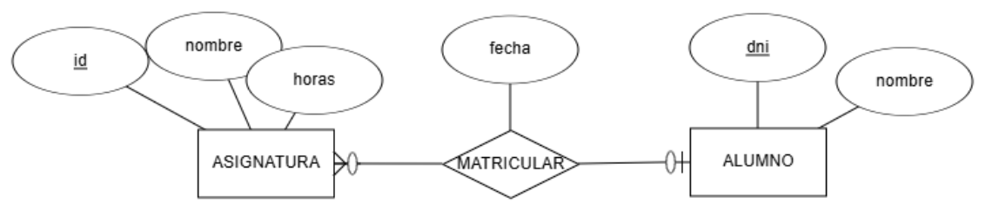
De MR a EER III
ASIGNATURA (id, nombre, horas, dni*)
· PK: (id)
· FK: (dni) → ALUMNO
ALUMNO (dni, nombre, id*)
· PK: (dni)
Lo que conlleva que la relación 1:N cambie de sentido, con las siguientes cardinalidades:
Card(ASIGNATURA, MATRICULAR) = (0, 1)Card(ALUMNO, MATRICULAR) = (0, N)
Autoevaluación
Y si en el último modelo, hacemos que la clave ajena de ASIGNATURA sea única, ¿qué pasaría? ¿Cómo cambiarían las cardinalidades?
Y si además hacemos que la clave ajena también tenga una restricción de valor no nulo (VNN), ¿qué pasaría? ¿Cómo cambiarían las cardinalidades?
Finalmente, volvamos al caso de la relación N:M, pero ¿Y si cambiamos la clave primaria de la tabla MATRICULAR para que no sea una clave compuesta y la dividimos en una clave primaria más una clave única? Supongamos el siguiente caso:
MATRICULAR (id*, dni*, fecha)
· PK: (id)
· UK: (dni)
· FK: (id) → ASIGNATURA
· FK: (dni) → ALUMNO
En este caso, ya no tenemos una relación N:M, sino que tenemos una relación 1:1 con una restricción de identificación entre ASIGNATURA y MATRICULAR (a la que podemos llamar MATRICULAR_ASIGNATURA), de manera que MATRICULAR pasa de ser una relación N:M a una entidad débil. Además, tenemos una relación 1:N entre ALUMNO y MATRICULAR (a la que podemos llamar MATRICULAR_ALUMNO). Es decir, pasamos de tener una relación entre dos entidades, a tener dos relaciones entre tres entidades.
Dicho de otra manera, un alumno se puede matricular en varias asignaturas, pero una asignatura sólo puede tener un alumno matriculado.
Así pues, ahora las cardinalidades son:
Card(ASIGNATURA, MATRICULAR_ASIGNATURA) = (0, 1)Card(MATRICULAR, MATRICULAR_ASIGNATURA) = (1, 1)Card(ALUMNO, MATRICULAR_ALUMNO) = (0, N)Card(MATRICULAR, MATRICULAR_ALUMNO) = (0, 1)

De MR a EER IV
Dibujando el modelo ER
A la hora de dibujar el modelo ER, debemos seguir un orden lógico. Primero, dibujamos las entidades que no tienen claves ajenas que salgan de ellas, y luego vamos añadiendo las entidades que sí tienen claves ajenas, revisando las restricciones y cardinalidades.
Supuesto I
Vamos a crear el modelo conceptual partiendo del siguiente modelo relacional:
A (a0, a1, a2)
· PK: (a0)
B (b0, b1, a0*, c0*)
· PK: (b0)
· FK: (a0) → A
· FK: (c0) → D
C (c0, c1, c2)
· PK: (c0)
D (c0*, d0)
· PK: (c0)
· FK: (c0) → C
Solución
El primer paso es dibujar aquellas entidades que no tienen ninguna clave ajena que salga de ellas, es decir, entidades "finales". Así pues empezaremos modelando la entidad A. Para modelar la entidad B, necesitamos previamente haber modelado las entidades C y D. Así pues, vamos a continuar con la entidad C.
Cuando nos planteamos la entidad C, vemos que tiene un atributo que es clave ajena hacia D, el cual además es clave primaria, por lo tanto, podemos decir que C es una subclase de D.
Finalmente, modelamos la entidad B, la cual tiene dos claves ajenas sencillas que no son claves primarias, y por lo tanto, son relaciones 1:N con las entidades a las que referencia.
El resultado se puede comprobar en el siguiente diagrama:

Supuesto MR-ER
Supuesto II
En este caso, vamos a realizar un ejemplo más complejo. Partimos del siguiente modelo relacional:
A (a0, a1)
· PK: (a0)
B (b0*, b1, b2, b3*)
· PK: (b0)
· FK: (b0) → A
· FK: (b3) → C
· VNN: (b3)
C (c0*, c1)
· PK: (c0)
· FK: (c0) → A
D (d0, d1, d2*)
· PK: (d0, d2)
· FK: (d2) → C
E (e0*, e1*, e2*, e3)
· PK: (e0, e1, e2)
· FK: (e0) → A
· FK: (e1, e2) → D
Solución
En este caso, el orden de creación de las entidades serán A, luego C y D, y finalmente B y E.
En caso de C, al tener una clave ajena que es una clave primaria (completa), entonces C es una subclase de A.
Respecto a D, en este caso tenemos una clave ajena, pero que forma parte de la clave primaria (es un subconjunto de la clave primaria), y por tanto, es una restricción de identificación respecto a la entidad C.
Una vez tenemos A, C y D, nos centramos en B. B sigue la misma estructura que C, por lo tanto, B también es una subclase de A, y además tiene otra clave ajena marcada como valor no nulo, que implica que es una relación 1:N (al no estar marcado como clave única), pero que sí tiene una cardinalidad mínima a 1 (por el valor no nulo).
Para terminar, la entidad E tiene dos claves ajenas que cubren toda la clave primaria. Por lo tanto, es una relación N:M entre A y D.
El resultado se puede comprobar en el siguiente diagrama:

Supuesto II MR-ER
Referencias
- Herramienta gráfica ERDPlus para la realización de diagramas de modelos relacionales.
-
Materiales sobre el módulo de BD:
-
Model Relacional - Institut Obert de Catalunya
- Diseño lógico relacional de Jorge Sánchez
- Bases de datos relacionales de Javier Gutiérrez
- Diseño de modelo lógicos normalizados de gestionbasesdatos.readthedocs.io
- Diseño lógico, por Luis Valencia y David Orellana, de la Universidad de Sevilla.
Actividades
- AC401. (RABD.6 // CE6a, CE6b, CE6c, CE6d, CE6e, CE6f, CE6h // 2p) Supongamos el siguiente modelo ER donde representamos un sistema de información donde modelamos los datos de un entrenador y los jugadores de un equipo de baloncesto. De momento, sólo modelamos la relación entre el entrenador y los jugadores:
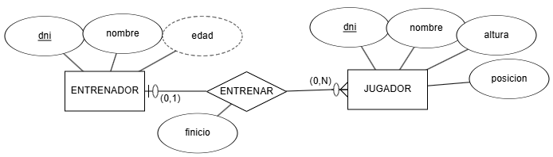
Actividad 401
Obtén el esquema relacional y a continuación, mediante ERDPlus, dibuja el modelo relacional.
- AC402. (RABD.6 // CE6a, CE6b, CE6c, CE6d, CE6e, CE6f, CE6h // 2p) Sobre el ejercicio anterior, vamos a añadir la entidad
EQUIPOcon el nombre del mismo, su logotipo, dirección y año de creación. Claramente, cada equipo sólo tiene un único entrenador, y un entrenador sólo puede serlo de un equipo.
Se pide:
- Modifica el modelo ER para añadir la nueva entidad y la relación necesaria
-
Modifica el modelo relacional a partir del nuevo modelo ER.
-
AC403. (RABD.6 // CE6a, CE6b, CE6c, CE6d, CE6e, CE6f, CE6h // 3p) Tenemos el siguiente modelo ER que representa las diferentes ediciones que de un libro publica una editorial, y los autores que escriben los libros:
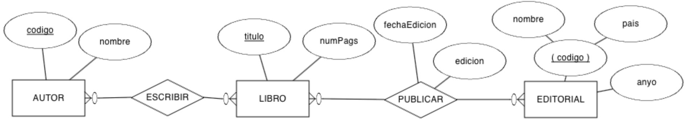
Actividad 403
Obtén el esquema relacional y completa el diccionario de datos.
- AR404. (RABD.6 // CE6a, CE6b, CE6c, CE6d, CE6e, CE6f, CE6h // 3p) Realiza el esquema lógico mediante un modelo relacional del siguiente modelo ER (es la solución del Supuesto de Carreteras de la sesión de Modelo ER):

Actividad 404
- AP405. (RABD.6 // CE6a, CE6b, CE6c, CE6d, CE6e, CE6f, CE6h // 3p) Tenemos el siguiente modelo ER sobre la organización de una empresa en departamentos y las características de sus empleados:
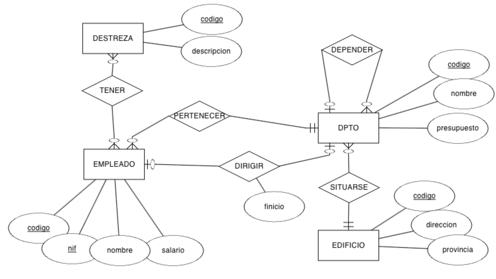
Actividad 405
Obtén el esquema relacional e indica las cardinalidades de las relaciones.
- AC406. (RABD.6 // CE6a, CE6b, CE6c, CE6d, CE6e, CE6f, CE6h // 3p) A partir del siguiente modelo ER que contiene restricciones de cardinalidad mínima y restricciones de identificación, se pide:

Actividad 406
- Genera el modelo relacional.
- Indica las cardinalidades de las relaciones.
-
Rellena tres tablas con datos ficticios (al menos 3 registros por tabla), ya sean datos relacionados o no, conforme consideres.
-
AR407. (RABD.6 // CE6a, CE6b, CE6c, CE6d, CE6e, CE6f, CE6h // 3p) Crea el modelo relacional a partir del modelo conceptual presentado en la actividad 203 sobre un centro educativo.

Modelo ER Centro Educativo
- AC408. (RABD.6 // CE6a, CE6b, CE6c, CE6d, CE6e, CE6f, CE6h // 3p) Crea el modelo relacional a partir del modelo conceptual presentado en el supuesto de la tienda visto en el apartado de generalizaciones de la unidad 2.
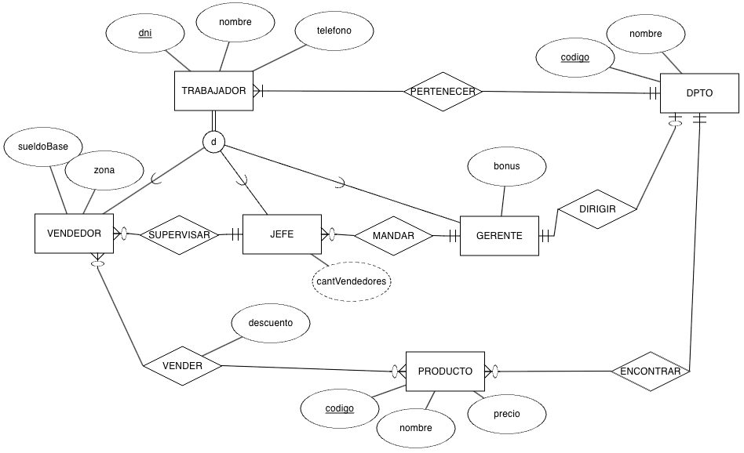
Modelo EER Tienda
- PR409. (RABD.6 // CE6a, CE6b, CE6c, CE6d, CE6e, CE6f, CE6h // 6p) Crea el modelo relacional a partir del modelo conceptual presentado en la actividad 215 sobre una cocina de un restaurante.

Modelo EER Cocina
-
AC410. (RABD.6 // CE6a, CE6f // 1p) Indica las cardinalidades de las siguientes tablas:
-
410.1
DEPARTAMENTO (id, nombre) · PK: (id)EMPLEADO (nif, nombre, dpto*) · PK: (nif) · FK: (dpto) → DEPARTAMENTO
- Card(DEPARTAMENTO, TRABAJAR) = ( , )
- Card(EMPLEADO, TRABAJAR) = ( , )
- 410.2
DEPARTAMENTO (id, nombre) · PK: (id)EMPLEADO (nif, nombre, dpto*) · PK: (nif) · FK: (dpto) → DEPARTAMENTO · VNN: (dpto)
- Card(DEPARTAMENTO, TRABAJAR) = ( , )
- Card(EMPLEADO, TRABAJAR) = ( , )
- 410.3
DEPARTAMENTO (id, nombre, jefe) · PK: (id) · FK: (jefe) → EMPLEADOEMPLEADO (nif, nombre) · PK: (nif)
- Card(DEPARTAMENTO, TRABAJAR) = ( , )
- Card(EMPLEADO, TRABAJAR) = ( , )
- 410.4
DEPARTAMENTO (id, nombre) · PK: (id)EMPLEADO (nif, nombre, dpto*) · PK: (nif) · FK: (dpto) → DEPARTAMENTO · UK: (dpto)
- Card(DEPARTAMENTO, TRABAJAR) = ( , )
- Card(EMPLEADO, TRABAJAR) = ( , )
-
AC411. (RABD.6 // CE6a, CE6d // 3p) A partir de los siguientes esquemas lógicos, dibuja el modelo ER:
-
Esquema 1
A (a0, a1) · PK: (a0)B (b0, b1, b2, a0*, c0*) · PK: (a0) · FK: (a0) → A · FK: (c0) → CC (c0, c1) · PK: (c0)M (c0*, m, n) · PK: (c0, m) · FK: (c0) → C2. Esquema 2A (a0, a1, bo*) · PK: (a0) · UK: (b0) · VNN: (b0) · FK: (b0) → BB (b0, b1) · PK: (b0)C (b0*, a0*, c0) · PK: (b0, a0) · FK: (b0) → B · FK: (a0) → A · VNN: (c0) -
AC412. (RABD.6 // CE6a, CE6d // 3p) A partir del siguiente modelo relacional, dibuja el diagrama ER:
EMPLEADO (num, dni, nombre, direccion, banco)
· PK: (num)
· UK: (dni)
MEDICO (num*, espec, anyo)
· PK: (num)
· FK: (num) → EMPLEADO
SOCIO (num*, dniS, fechaNac, medicoChequeo*, fechaChequeo, resultadoChequeo)
· PK: (num)
· UK: (dniS)
· FK: (num) → EMPLEADO
· FK: (medicoChequeo) → MEDICO
TAQUILLA (num*, estado, tamaño)
· PK: (nun)
FIJA (num*, socio*)
· PK: (num)
· FK: (num) → TAQUILLA
· FK: (socio) → SOCIO
DIARIA (num*, socio*)
· PK: (num)
· FK: (num) → TAQUILLA
· FK: (socio) → SOCIO
DISCIPLINA (nombre, descripcion)
· PK: (nombre)
MONITOR (num*, fechaNac, disciplina*)
· PK: (num)
· FK: (num) → EMPLEADO
· FK: (disciplina) → DISCIPLINA
SESION (dia, hora, sala, monitor*, disciplina*)
· PK: (dia, hora, sala)
· FK: (monitor) → MONITOR
· FK: (disciplina) → DISCIPLINA
· VNN: (monitor)
· VNN: (disciplina)
TECNICO (num*)
· PK: (num)
· FK: (num) → EMPLEADO
MODELO (codigo, descripcion, empresas, tecnico*)
· PK: (codigo)
· FK: (tecnico) → TECNICO
APARATO (num, codigo*, fechaAdquisic, estado)
· PK: (num, codigo)
· FK: (codigo) → MODELO
- AR413. (RABD.6 // CE6a, CE6d // 3p) A partir del siguiente modelo relacional, dibuja el diagrama ER:
EDIFICIO (num, numPlantas, gestor*)
· PK: (num)
· FK: (gestor) → GESTOR
GESTOR (codigo, nombre, apellido1, apellido2, salario, residencia*)
· PK: (codigo)
· FK: (residencia) → EDIFICIO
· UK: (residencia)
INSPECTOR (codigo, nombre)
· PK: (codigo)
SUPERVISAR (codigo*, num*, fUltima, fSiguiente)
· PK: (codigo, num)
· FK: (codigo) → INSPECTOR
· FK: (num) → EDIFICIO
TRABAJADOR (codigo, nombre)
· PK: (codigo)
APARTAMENTO (numA, numE*, dormitorios)
· PK: (numA, numE)
· FK: (numE) → EDIFICIO
LIMPIAR (codigo*, numA*, numE*)
· PK: (codigo, numA, numE)
· FK: (numA, numE) → APARTAMENTO
· FK: (codigo) → TRABAJADOR
- AP414. (RABD.6 // CE6a, CE6e // 3p) Una vez realizada la actividad AR412, añade en el modelo ER una entidad
PERSONAa modo de generalización de las tablasGESTOR,INSPECTORyTRABAJADOR.
Crea las tablas en el modelo relacional, modificando aquellas que sean necesarias, y comprueba si las tablas que dependen de ellas también deben modificarse.
- AP415. (RABD.6 // CE6a, CE6e // 3p) Las siguientes tablas representan programas de televisión e invitados que participan en ellos:
PROGRAMA (id, nombre)
· PK: (id)
INVITADO (dni, nombre)
· PK: (dni)
Añade los elementos necesarios (claves ajenas, únicas, valores no nulos, etc...) para que se cumplan las siguientes restricciones:
Card(PROGRAMA, DAR_EXCLUSIVA) = (1 , 1)
Card(INVITADO, DAR_EXCLUSIVA) = (0 , N)Card(PROGRAMA, ASISTIR) = (0 , N)
Card(INVITADO, ASISTIR) = (1 , 1)Card(PROGRAMA, COTILLEAR) = (0 , N)
Card(INVITADO, COTILLEAR) = (0 , N)Card(PROGRAMA, HACER_RIDICULO) = (0 , N)
Card(INVITADO, HACER_RIDICULO) = (0 , 1)Card(PROGRAMA, INSULTAR) = (0 , 1)
Card(INVITADO, INSULTAR) = (0 , 1)Card(PROGRAMA, DIFAMAR) = (0 , N)
Card(INVITADO, DIFAMAR) = (0 , 1)Card(PROGRAMA, RAZONAR) = (0 , 1)
Card(INVITADO, RAZONAR) = (1 , 1)Card(PROGRAMA, GRITAR) = (0 , N)
Card(INVITADO, GRITAR) = (0 , N)Card(PROGRAMA, LADRAR) = (0 , N)
Card(INVITADO, LADRAR) = (0 , N)
Finalmente, dibuja el modelo ER resultante con todas las relaciones y restricciones.
- AC416. (RABD.6 // CE6a, CE6b, CE6c, CE6d, CE6e, CE6f, CE6g // 3p) A partir del siguiente modelo relacional:
EQUIPO (num, fUltimaRevision, fAlta, detalle*)
· PK: (num)
· FK: (detalle) → DETALLE_EQUIPO
· VNN: (detalle)
DETALLE_EQUIPO (codigo, tipo, modelo, fUltimaRevision)
· PK: (codigo)
VENTA (codigo, precio, fecha, equipo*, cliente*, comercial*)
· PK: (codigo)
· FK: (equipo) → EQUIPO
· FK: (cliente) → CLIENTE
· FK: (comercial) → COMERCIAL
· VNN: (equipo)
· VNN: (cliente)
· VNN: (comercial)
ALQUILER (codigo, precio, fecha, equipo*, cliente*, comercial*)
· PK: (codigo)
· FK: (equipo) → EQUIPO
· FK: (cliente) → CLIENTE
· FK: (comercial) → COMERCIAL
· VNN: (equipo)
· VNN: (cliente)
· VNN: (comercial)
CLIENTE (id, nombre, categoría)
· PK: (id)
COMERCIAL (codigo, nombre, apellido1, rango, mentor*)
· PK: (codigo)
· FK: (mentor) → COMERCIAL
Contesta a las siguientes preguntas argumentado tus respuestas:
- ¿Puede un
EQUIPOtener más de unDETALLE_EQUIPO? - ¿Puede un
COMERCIALvender variosEQUIPO? - ¿Un
ALQUILERcuantosDETALLE_EQUIPOtendrá? - ¿Puede un
CLIENTEalquilar y vender el mismoEQUIPO? - ¿Podemos averiguar que
COMERCIALvendió un determinadoEQUIPO? - ¿Una persona puede ser
CLIENTEyCOMERCIALa la vez? - ¿Todo
COMERCIALdebe tener un mentor? -
¿Un
COMERCIALpuede tener varios mentores o un mentor puede mentorizar a varios comerciales? -
PY417. (RABD.6 // CE6a, CE6b, CE6c, CE6d, CE6e, CE6f, CE6g, CE6h // 6p) Una vez finalizamos el bloque de Diseño de bases de datos, ya estamos en condiciones de afrontar el reto Diseñamos.
Para ello, a partir del modelo conceptual obtenido en la actividad 216, cada equipo debe entregar:
- El modelo ER.
- El modelo MR obtenido a partir del modelo ER.
- Diccionario de datos del MR.
En las fechas indicadas por el docente, cada equipo entregará un informe con los diferentes artefactos generados y presentará al resto de la clase los modelos generados, mediante un exposición de máximo 10 minutos por equipo.
Se utilizará una rúbrica para su evaluación en base a la siguiente lista de cotejo:
- El modelo relacional refleja todo el modelo conceptual.
- Se argumentan las decisiones de diseño tomadas por el equipo.
- El diccionario de datos está completo.
- El informe entregado no contiene faltas de ortografía.
- El informe entregado tiene un formato adecuado (portada, apartados, autores, etc...).
-
Todo el equipo participa tanto en el informe como en la exposición de forma equitativa.
-
PR418. (RABD.6 // RA6 // 3p) A partir del siguiente ticket de una compra en una tienda de deportes, se pide:
-
Crea el modelo EER que permita almacenar toda la información
- Crear el modelo relacional a partir del modelo EER anterior.
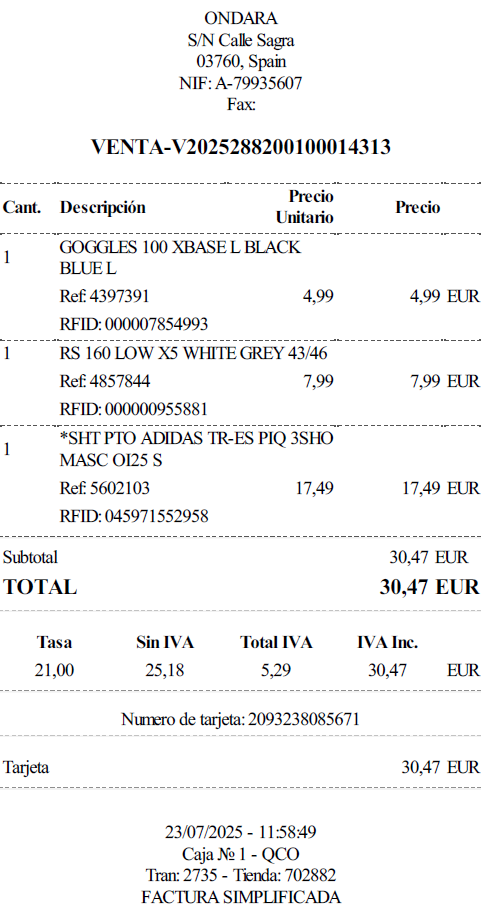
Ticket de compra
-
PO419. (RABD.6 // RA6 // 60p) La prueba objetiva que agrupa todo el resultado de aprendizaje consistirá en:
-
Crear un modelo ER a partir de un sistema de información.
- Crear un modelo relacional a partir de un modelo ER (basado en uno de los modelos generados en el reto de la actividad anterior).
- Interpreta un modelo ER o un modelo relacional.
-
Crear un modelo ER a partir de un modelo relacional.
-
AR420. (RABD.6 // CE6b, CE6c, CE6d, CE6e, CE6f, CE6g // 3p) Una vez finalizada la unidad, responde todas las preguntas del cuestionario inicial, con al menos un par de líneas para cada una de las cuestiones.
- Que al tratarse de un atributo derivado, no se traduce al modelo relacional, si no que formará parte de la aplicación que después se encargará de obtener el dato mediante una consulta. ↩

Gracias por tu tiempo. Si quieres me puedes invitar a un café en ko-fi.
¡Gracias por tu colaboración! Ayúdame a mejorar los apuntes enviándome un mail a a.medrano@edu.gva.es con tus comentarios.